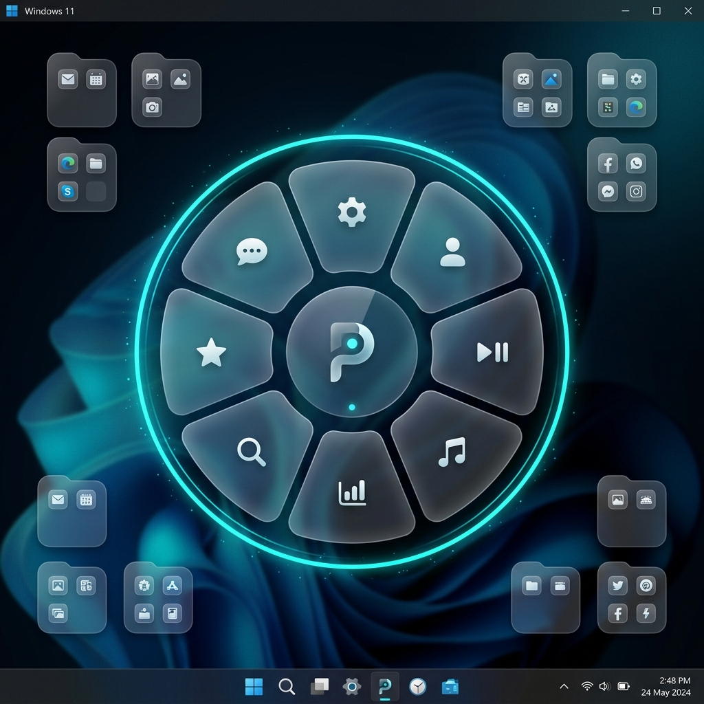
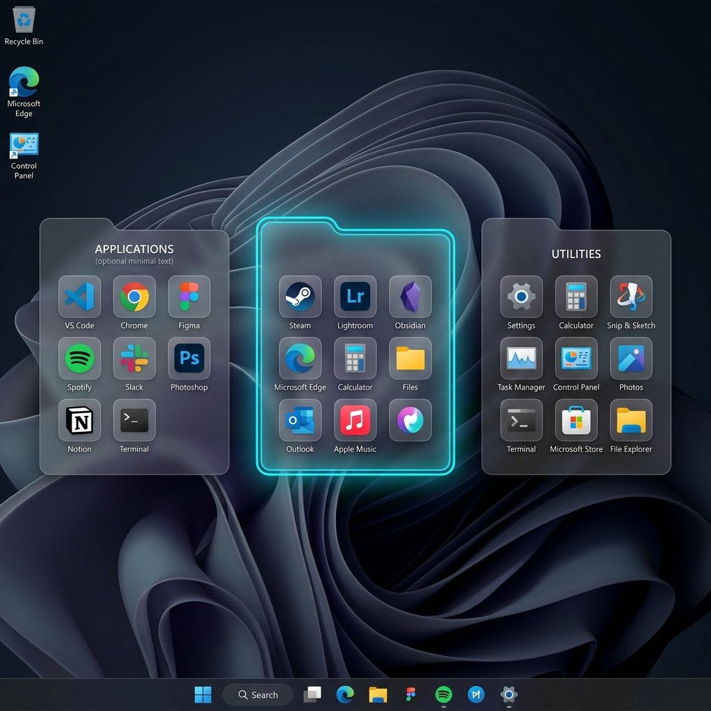
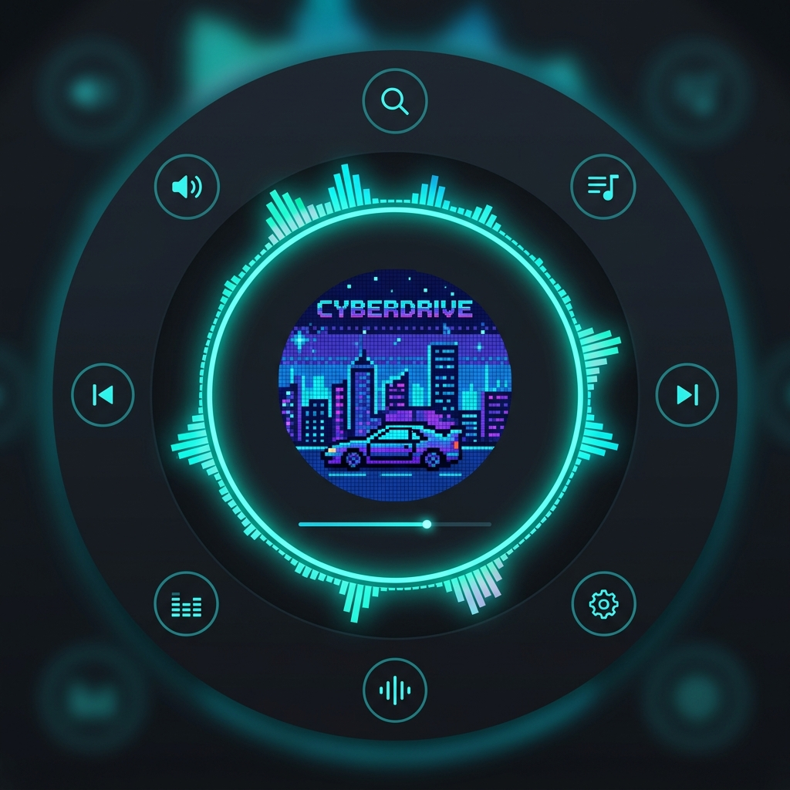
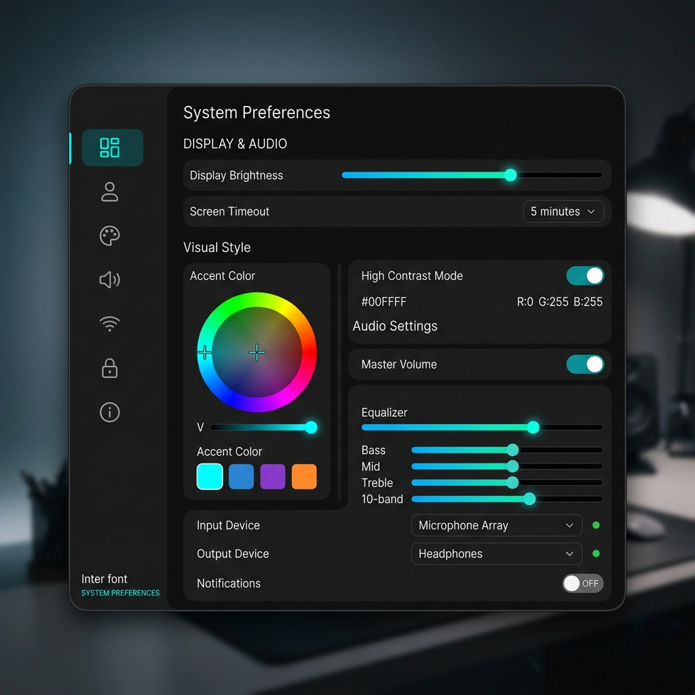

A premium desktop customization suite for Windows. Floating folders, a radial HUD launcher, audio-reactive visualizers, and deep theming — all with zero clutter.

Pandora replaces the cluttered Windows desktop with an elegant, animated workspace.
A full-screen radial menu triggered by a single hotkey. Up to 9 customizable layers of tools — volume, night light, screenshots, and more — all at your fingertips.
Glassmorphic folder widgets pinned to your desktop. Drag apps, files, and shortcuts in. Paginated grids, search, sorting, and nested folder navigation.
Album art transforms with the beat. Choose from Edge Ring EQ, 8-Bit Mosaic, Voxel Wiggle, or Size Pulsing — all running at 60fps.
Hardware-accelerated screen filters using Windows Gamma Ramps. Night Light presets — Reading, Sunset, Movie, Eye Saver — with zero‑latency switching.
Custom color themes with full HSV pickers, pagination styles, hover animations, glow intensities, theme intensity levels, acrylic blur — make it truly yours.
Real-time SMTC media controls inside the Halo hub. Scrub timelines, adjust per-app volume, switch between Spotify, Chrome, and Apple Music sessions.

Translucent, draggable panels that live on your desktop — always ready, never in the way.

The Halo center transforms with your music. Choose your visualizer and watch it pulse.

Every setting at a glance. HSV color pickers, custom sliders, and a searchable settings pill.
Download the installer, run it, and Pandora handles the rest. No admin rights needed at runtime.
Download PandoraSetup.exe